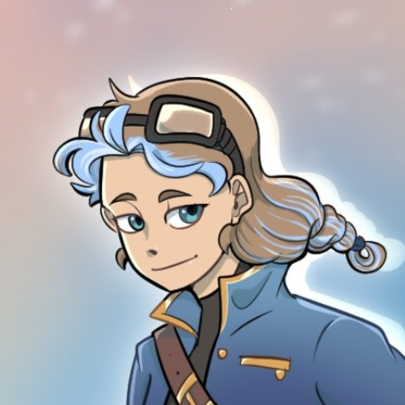
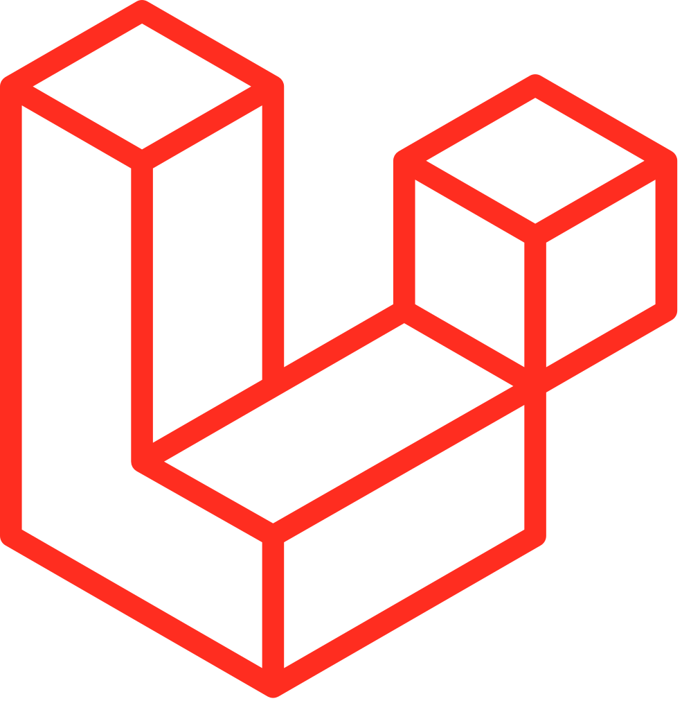
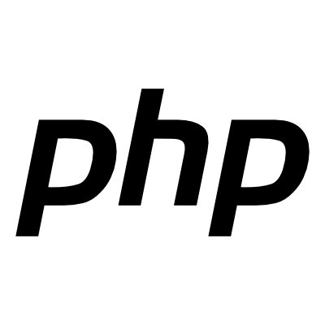
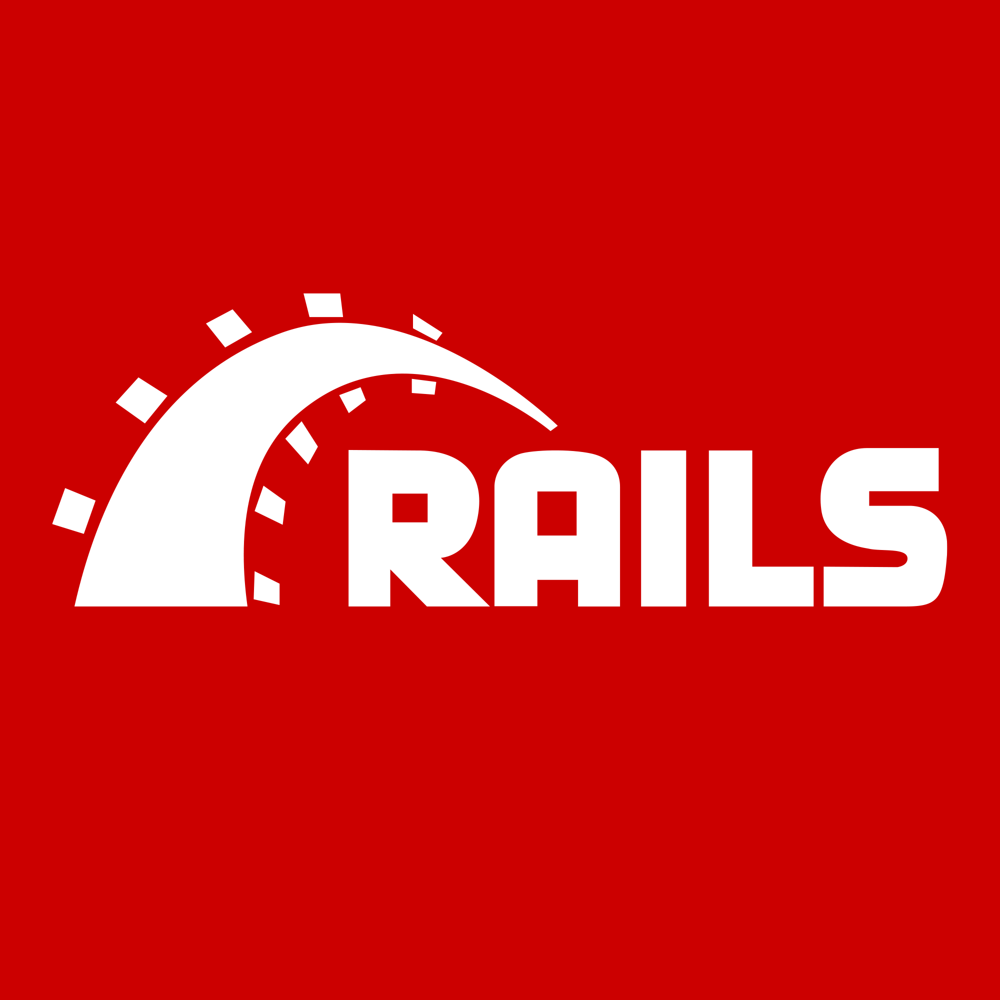
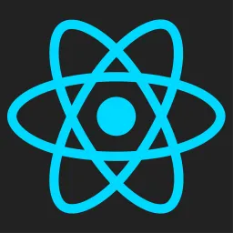
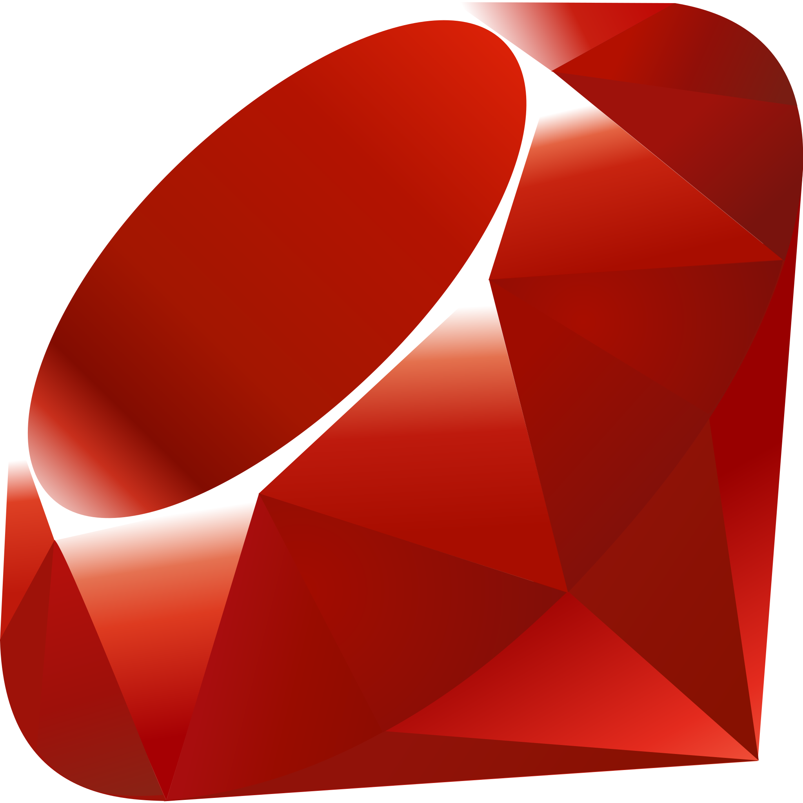

Sara van den Bos
Als een creative developer beperk ik mij niet tot het ontwikkelen van een applicatie. Mijn expertise strekt zich uit tot het gehele proces; van een debriefing met de klant tot ontwerpen. Door het combineren van mijn technische vaardigheden en creative achtergrond creëer ik innovatieve en gebruiksvriendelijke appplicaties. Ik kijk ernaar uit om mijn kennis uit te breiden en bij te dragen aan uitdagende en toffe projecten als een back-end of full-stack developer.
Opleiding(en)
HBO Creative Media and Game Technologies | 2020 - 2024
Tijdens deze brede opleiding heb ik mij ontwikkeld als creative developer met een focus op de development (back-end en front-end). Ik heb de minor DevOps gevolgd tijdens mijn vierde jaar.
Werkervaring
Ruby Developer, iO Rotterdam | feb 2023 - feb 2024
Tijdens mijn werk bij iO heb ik meerdere back-, front-end en testing taken verricht in teamverband bij Techniek College Rotterdam, Zadkine, UNICEF en Hoge Veluwe. Daarnaast heb ik bijgedragen aan het onwikkelen van een tool om afbeeldingen bij te snijden binnen het CMS systeem.
Stages
Stagiair back-end developer, iO Rotterdam | sep 2022 - feb 2023
Tijdens mijn meeloopstage heb ik kunnen meelopen binnen een Ruby development team en meerdere back-end taken uitgevoerd. Hierbij heb ik geleerd om in teamverband te werken met de AGILE werkwijze.
Afstudeerstage, CoE HRTech Rotterdam | feb 2024 - nov 2024
Ontwikkelen van een bibliotheek van grafische elementen om data te visualiseren in een maritieme user interface. Binnen dit project heb ik meerdere ontwerpen gemaakt en getest met de doelgroep. Dit is uiteindelijk uitgewerkt tot een technisch prototype.
Technische vaardigheden





Andere vaardigheden
Naast mijn technische vaardigheden heb ik ook de volgende vaardigheden in huis:
- UX design
- AGILE en SCRUM werkwijzes
- Git, issues, PR's en code reviews
- Docker